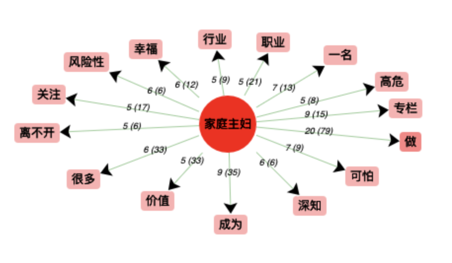
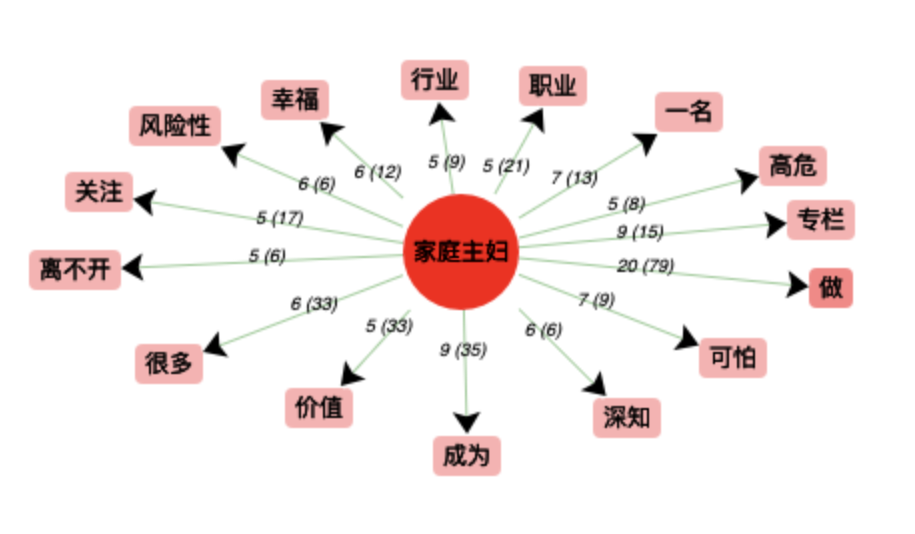

D’abord, dans les coocurrences de l’expression femme au foyer, nous pouvons voir des mots grammaticaux comme "a"(un),"being"(copule), "is"(copule),"the"(déterminant).
Ensuite avec des mots comme “woman”(femme) nous pouvons voir que l'expression femme au foyer est étroitement liée à l'identité féminine.
L'un des premiers mots dans le tableau est “stigma” (stigma), qui a une connotation négative. Dans le suite nous observons des mots comme “mentally’(mentalement), “stressedout”(stressé), “exhausted”(épuisé), “stress” (stress), les significations de ces mots nous indiquent que l'image de la femme au foyer dans un contexte anglophone peut être associée à à quelque chose de pénible et négatif.
Le mot suivant dans le tableau est “role”(rôle). Nous pouvons supposer qu'il y a une discussion sur le rôle de femme au foyer dans notre corpus.
Nous remarquons un mot concernant une époque : "1950s", qui est étroitement lié au contexte de la période, lorsque, après la fin de la Seconde Guerre mondiale, on assiste à un retour des femmes américaines à la vie familiale. La "happy housewife" était la quintessence de l'image de la femme américaine des années 50. Cette image était étroitement liée à la vision traditionnelle des femmes aux Etats-Unis, avec le mari travaillant et la femme restant à la maison pour s'occuper des tâches ménagères et des enfants. Le dernier mot est “disavantages” (désavantages), ce mot négatif pris dans son contexte est en effet relié à l’expression étudiée, montrant que le statut de femme au foyer a de nombreux aspects négatifs.
Nuage de mot:
Autour du mot clé “housewife”(femme au foyer), nous pouvons trouver les mots en taille grande :“family” (famille),“woman”(femme),“children”(enfants),“social”(société), ces mots correspondent bien aux mots que nous avons trouvés dans itrameur.
Il y a aussi des mots qui ne sont pas dans itrameur tel que “husband”(mari), “health”(santé), “time”(temps) et qui sont liées à la vie de la femme au foyer.


Dans les coocurrences de l’expression femme au foyer, à part le mot “de” qui est un des mots les plus fréquents en français, on peut voir les mots “moins” “choix” et “reste” qui peuvent à premier abord sembler peu spécifiques, mais qui, pris dans leur contexte, sont en effet relié à l’expression étudiée.
Le mot moins exprime deux choses, ce à quoi les femmes qui choisissent de rester au foyer renoncent (leur carrière, un salaire, certains diplômes pour celles qui arrêtent leurs études) et aussi la diminution du pourcentage de femmes au foyer en France.
Les mots "choix" et "reste" sont liés entre eux et utilisés dans des phrases expliquant qu’une femme au foyer fait le choix de rester à la maison. Le mot choix est aussi utilisé pour parler du fait qu’un foyer avec un parent au foyer a choisi de renoncer à un salaire.
Le mot déséspérées est lié à la série « desperate housewives » dont la popularité est telle qu'il est très courant que ce mot soit associé au concept de la femme au foyer.
On peut voir aussi "retraite" "travaillé" "société" et "avpf" (assurance vieillesse du parent au foyer), des mots qui sont liées à la question de la situation financière et sociale de la femme au foyer, qui se retrouve assez souvent dépendante du conjoint ayant une activité salariée. Ces mots sont aussi témoins du débat sur la rémunération et de façon plus générale, la valeur du travail domestique.
Le mot "mayores" (mayores de = d'âge supérieur à) et "años" sont liés, ils sont utilisés pour parler d'une potentielle compensation qu'il faudrait mettre en place pour les femmes au foyer en âge d'aller à la retraite, ou ils servent à délimiter des tranches d'âge dans ce groupe social.
Les mots "pueden"(peuvent), "solicitar" et "ayudas" (aides) sont aussi liés au débat sur une compensation du travail domestique, ils se réfèrent notamment à des aides que les femmes au foyer pourraient demander ou devraient pouvoir demander (certains pays d'Amérique latine comme l'Argentine ayant déjà implémanté un système de retraite pour les femmes au foyer ou des aides spécifiques tandis que d'autres sont encore en débat sur le sujet). Le mot "amos" est utilisé principalement dans ce débat sur les retraites pour inclure les cas où ce serait un homme qui serait resté au foyer.
Le mot "todos"(tous) est un des plus communs dans la langue espagnole, il permet entre autres de se référer aux différents recours qu'ont les femmes au foyer pour obtenir une aide financière, notamment pendant la pandémie.
On peut voir une omniprésence du débat sur la rémunération des femmes au foyer et leur retraite (ou absence de retraite) dans la presse hispanophone. Il se pose moins la question de si les femmes devraient être au foyer ou participer à la vie active que dans les articles francophones.
 


Pour réaliser nos analyses sur iTrameur, nous avons utilisé le corpus contenant uniquement les contextes dans lesquels notre mot était employé.
Nous pouvons voir que ces mots correspondent bien aux mots que nous avons trouvés dans itrameur.